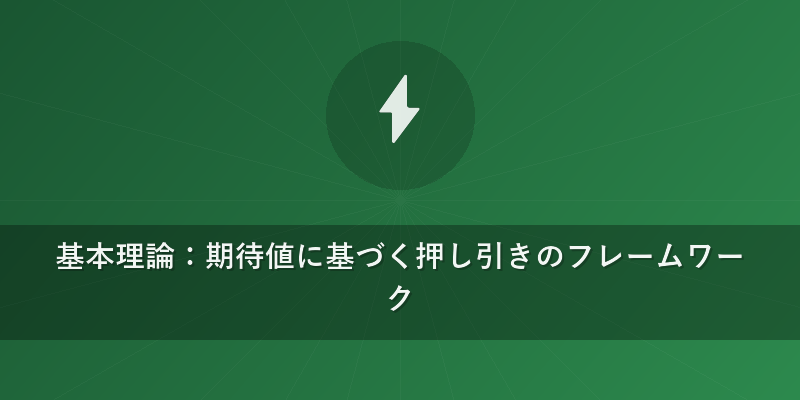
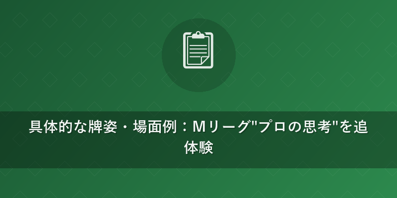
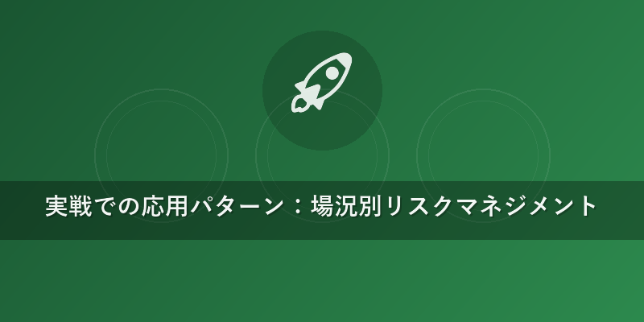

Mリーグ プロの思考：データで学ぶ押し引き判断の極意
麻雀戦術ラボ
Mリーグの熱戦を彩るプロ雀士たちの「押し引き判断」。その一瞬の選択が勝敗を分ける重要な局面です。感覚に頼りがちなこの判断を、データと理論に基づき徹底解剖します。Mリーグのプロがどのような"思考"で"押し引き判断"を行っているのか、その"プロの思考"を共に深掘りしていきましょう。
この記事の結論
- 結論1：押し引きは「期待値」で測るべし。 和了（アガリ）期待値と放銃（ほうじゅう＝他家への振り込み）リスクを数値化する視点を持つことが、Mリーグのプロにも通じる"押し引き判断"の基本です。
- 結論2：局の進行度合いと自身の最終形を明確にする。 両面（リャンメン）待ちを軸とした高打点・高和了率の手は、強く押す価値があります。
- 結論3：相手の河（ホー＝捨て牌）と副露（フーロ＝鳴き）から予測される打点・待ちを考慮し、リスク許容度を調整する。 他家の"思考"を読み解くことが、自身の"押し引き判断"を最適化します。

基本理論：期待値に基づく押し引きのフレームワーク
麻雀の"押し引き判断"は、究極的には「目の前の局でどれだけ得をするか損をするか」という期待値（特定の行動がもたらす平均的な価値）の計算に基づいています。Mリーグのプロ"思考"も、この期待値の最大化を目指しています。
「押し」の期待値 = （和了率 × 和了時の得点）- （放銃率 × 放銃時の失点） 「引き」の期待値 = （安全度 × 次局以降の期待値）- （手牌進行が遅れることによる機会損失）
プロの選択は、感覚ではなくこの期待値を最大化する方向に働いています。一般的な統計データとして、最高峰のオンライン麻雀「鳳凰卓」やMリーグクラスのプロ雀士のデータでは、和了率が約24%、放銃率が約9%程度と言われています。この数値は、"押し引き判断"の重要な基準となります。例えば、ある局面で「この手牌なら和了率が30%に上がるから押す」「この牌を切ると放銃率が20%に跳ね上がるから引く」といった判断は、こうしたデータに裏打ちされています。
受入枚数（うけいれまいすう）："押し引き判断"の初期段階では、手牌の未来形とそれに至るまでの受入枚数（テンパイまでの有効牌の枚数）が重要です。受入枚数が多いほど、手牌進行がスムーズになり、和了率が高まる傾向にあります。これは、"プロの思考"において最も基本的な牌効率の考え方です。

具体的な牌姿・場面例：Mリーグ"プロの思考"を追体験
場面1：序盤の愚形リーチ対面
局: 東2局 2本場 供託1000点 ドラ: ⑤ 点数状況: 東家32000 南家25000 西家20000 北家23000（自分は南家） 巡目: 7巡目 捨て牌: * 対面（東家）: 1s2s中中⑤⑥ * 上家（西家）: 西南白1s2s3s * 下家（北家）: 3s4s5s6s7s8s * 自分: 南東白8s9s
あなたの手牌: 二三四⑤⑥⑦８８９⑨⑨ 東 ツモ: ７s
何を切るべきか: 東
なぜそう切るのか: ７sをツモって打点は十分になりましたが、対面のリーチ（あと1枚で和了できる状態を宣言すること）に対して現物（相手の捨て牌と同じで安全な牌）がありません。リーチ者の捨て牌から⑤を跨いでいるため、愚形（ぐけい＝形が悪い待ち）の可能性が高いものの、ドラまたぎで打点は十分ありそうと予測できます。ここで手牌に依存して危険牌を押すのはリスキーです。特に点棒状況に余裕がない南家で、まだ序盤。手牌は平和（ピンフ）の一向聴（イーシャンテン＝あと1枚で聴牌）ではありますが、現物の「東」を切って一旦様子見するのが"プロの思考"です。安牌がないなら、筋（スジ＝特定の牌の組み合わせによる安全度の目安）などを使ってリスクを抑えます。この場合、８sと９sは無筋（相手のリーチに対して安全度が低い牌）ですが、字牌である東は比較的安全度が高いと判断します。
受入枚数: ７sツモにより、手牌は二三四⑤⑥⑦８８９⑨⑨７s 東。この手牌は聴牌まで残り1枚。待ちの候補は５s、８s、⑨。もし東を切る場合、受入枚数は変わらず、和了への筋道は保たれます。安牌を切ることで放銃率を下げ、次巡以降のツモに期待する選択です。
Mリーグ"プロの思考": Mリーグでは、親の愚形リーチに対して、子方（こかた＝親以外のプレイヤー）は無理をしないケースが多いです。特に点棒状況が苦しい、あるいは持ち点が平均以上の場合は、安易な放銃は避けるべきと判断します。KONAMI麻雀格闘倶楽部・堀慎吾プロやEX風林火山・佐々木寿人プロも、状況によっては手役を崩して安牌切りを選択する場面がよく見られます。これは、局の期待値のトータルでプラスになる選択を優先しているためです。
場面2：終盤の高打点両面リーチ対面
局: 南3局 親番 供託1000点 ドラ: 白 点数状況: 東家15000 南家38000 西家22000 北家25000（自分は東家＝親） 巡目: 13巡目 捨て牌: * 対面（西家）: 2s3s4s中白⑤⑤ * 上家（北家）: 1s2s3s4s5s6s * 下家（南家）: 4s5s6s7s8s9s * 自分: 1s2s3s4s5s6s
あなたの手牌: 二三四六七八⑨⑨⑨ 北北北 ツモ: ⑥
何を切るべきか: ⑥
なぜそう切るのか: 親番であり、トップ目の南家とは点差が離れています。対面がリーチしていますが、自身の打点（アガった時の点数）が非常に高く、形も良い（二三四六七八のタンヤオ系、トイトイのチャンスもある）。ツモ⑥で二三四六七八⑨⑨⑨ 北北北⑥。これにより、打点は満貫（マンガン）確定、最大跳満（ハネマン）〜倍満（バイマン）まで見える勝負手になります。親番でこの打点なら、"押し引き判断"で勝負する価値が非常に高いと"プロの思考"は働きます。
対面の捨て牌は11巡目に2s3s4sと切ってからのリーチで、典型的な両面（リャンメン）の筋読み。ドラ白が場に1枚も出ていないため、対面の手も高打点の可能性があります。しかし、自分の和了期待値が非常に高いため、ここで降りる選択は非常に不利です。親の連荘（レンチャン＝親が和了して局を続けること）はMリーグでも重要な戦術の一つであり、"プロの思考"はリスクを負ってでも連荘を目指します。
受入枚数: ツモ⑥で、六七八と⑤⑥⑦の形になり、⑤⑥⑦八九⑥七⑧の受け。もしくは六七八と⑨⑨⑨ 北北北⑥。六を切れば五と八が待ちになり、合計8枚の受け（五、八がそれぞれ4枚残っていれば）。これは非常に和了率の高い聴牌形と言えます。
Mリーグ"プロの思考": Mリーグでは、赤坂ドリブンズ・鈴木たろうプロやKADOKAWAサクラナイツ・内川幸太郎プロなど、親番の連荘を目指し、高打点手であれば多少のリスクを負ってでも攻めるケースが多いです。特に終盤でトップ目と点差がある場合、押し返すことで逆転のチャンスを作ります。{{internal_link:親番の連荘戦術とそのリスク}}について深く理解することで、Mリーグ"プロの思考"がより明確になります。

実戦での応用パターン：場況別リスクマネジメント
東場 vs 南場での違い
- 東場（トンバ＝前半戦）: 比較的リスクを抑えつつ、手作りを優先する傾向があります。失点を最小限に抑え、局を進める意識が強いです。和了率を重視し、安手（やすで＝点数の低い手）でも和了を重ねて場を支配することが"プロの思考"です。
- 南場（ナンバ＝後半戦）: 点棒状況によって"押し引き判断"が大きく変化します。
- トップ目（トップの点棒を持つ人）: 守備的に、無理な押しはしません。ライバルへの放銃を避けることを最優先します。
- ラス目（最下位の点棒を持つ人）: 攻撃的に、多少のリスクを負ってでも高打点を目指します。アガリを目指すだけでなく、逆転の可能性を探ります。
- 中間順位: 状況により柔軟に"押し引き判断"を下します。親の連荘を阻止したり、トップ目を追いかけるために押すこともあります。
点数状況による判断の変化
- 僅差のトップ目: 最終局に近い場合、降りを選択し、現状維持を優先することが多いです。放銃による順位の転落を防ぐためです。
- 大きな点差のラス目: 多少の放銃を許容してでも、高打点を目指してリーチ・鳴きを仕掛けます。失うものが少ないため、リスクを取る"プロの思考"が働きます。
- オーラス（最後の局）の逆転手: Mリーグでは、逆転のためにどんな危険牌（ほうじゅうしやすい牌）でも切る選択が見られます。ただし、その危険牌を切ることで和了期待値がどれだけ上がるか、事前に"プロの思考"で計算されています。
他家の捨て牌・副露状況からの読み
- 序盤の鳴き: 役牌（ヤクハイ＝役となる字牌）やホンイツ（特定の種類の牌と字牌のみで構成される手）など、手の速さと打点の高さを示すことが多いです。警戒レベルを上げて"押し引き判断"に影響を与えます。
- 中盤のリーチ: 筋の読み、リーチ者の捨て牌から愚形か両面かを見極めることが重要です。一般的に、リーチ者の捨て牌に偏りがあれば愚形、順当であれば両面と推測されることが多いです。{{internal_link:Mリーグにおける捨て牌読みの重要性}}も参照してください。
- 終盤の全ツッパ（全て危険牌を切って攻めること）: 相手の点棒状況から、最後の勝負手と判断し、"押し引き判断"の基準を切り替えます。
巡目による判断基準の変化
- 早巡（ハヤジュン＝序盤）: 柔軟に手作り。危険牌は避け、安牌候補を抱える意識が大切です。
- 中巡（チュンジュン＝中盤）: 自身の形が良ければ攻め、悪ければ守備にシフトします。他家のリーチに対しては、自身の和了率と打点を見て"押し引き判断"を下します。
- 終盤（シュウバン＝終盤）: 自身の聴牌有無、他家の和了への近さ、点棒状況が"押し引き判断"の主要因となります。
よくある間違い・罠：初中級者が陥りやすいミス
「オリ打ち」の誘惑
リーチに対して現物がないからといって、適当に字牌や中筋を切ってしまい、結局放銃してしまうこと。「どうせ当たらないだろう」という根拠のない期待は禁物です。Mリーグ"プロの思考"は、常に最悪の事態を想定して動きます。 * 例: 他家リーチに対し、手牌に安全牌がない。仕方なく「中」を切ったら放銃してしまった。 * 正着: 無筋を切るなら、自分の手牌の進行度合いと打点、相手の捨て牌の傾向から放銃率を予測し、最もリスクの低い牌を選びます。時にはベタ降り（徹頭徹尾、安全牌のみを切って守ること）も有効な戦術です。これは"Mリーグ"でプロ雀士がよく見せる選択です。
「何が何でも和了りたい」病
自分の手牌が安いのに、相手の高打点リーチに無理やり押し返して放銃してしまうこと。これは期待値の計算ができていない証拠です。 * 例: タンヤオ（全ての牌を数牌の2から8、字牌なしで揃える役）のみの安い手で、相手の満貫確定リーチに無筋をプッシュ。結果、痛い放銃。 * 正着: 和了期待値と放銃リスクのバランスが重要です。和了率が低く、打点が安い場合は、一旦引いて他家のツモ和了や流局（誰も和了せずに局が終わること）を待つ方が賢明です。
「安牌を抱えすぎ」問題
序盤から安牌ばかり意識しすぎて、手牌の進行が遅れ、高打点や良形（良い待ち）のチャンスを逃してしまうこと。守備意識が強すぎて攻撃の機会を失っています。 * 例: 序盤に字牌を抱えすぎて、他家から鳴かれたり、手牌がまとまらず終盤に苦しくなる。 * 正着: 序盤は手牌効率を最優先します。字牌の重なりや役牌の絡みを除き、安牌候補は必要最低限で良いです。和了率を上げるための{{internal_link:効率的な牌の切り方}}を意識することが、"Mリーグ"で活躍する"プロの思考"に近づく一歩です。
まとめ：こんな場面で使おう
本記事で解説した"Mリーグ""プロの思考"に基づく"押し引き判断"は、以下のような場面で特に有効です。実戦で判断に迷ったときのチェックリストとして活用してください。
- 自身の和了まで遠く、かつ他家からのリーチが入った場合: 基本は降りて、放銃リスクを避ける判断が優先されます。
- 自身の和了まであと少し（一向聴・聴牌）、かつ高打点が見える場合: 相手のリーチに対し、自身の和了期待値が放銃リスクを上回ると判断すれば積極的に押しましょう。
- 親番での連荘を目指す局面: 特に終盤の親番では、リスクを負ってでも連荘を狙う価値があります。これはMリーグで数多くのプロが実践する"思考"です。
- 点数状況が厳しいラス目の局面: 多少の放銃リスクを許容し、高打点の手で逆転を狙いましょう。
- 他家の捨て牌や鳴きから、手が速く高打点の可能性が高いと読める場合: 警戒レベルを上げ、自身の"押し引き判断"を慎重にすることで、無駄な放銃を防ぎます。
これらの"押し引き判断"の原則を理解し、実戦で経験を積むことで、あなたの麻雀は一段とレベルアップするはずです。Mリーグの試合を観戦する際も、"プロの思考"を意識して"押し引き判断"に注目してみると、新たな発見があるでしょう。